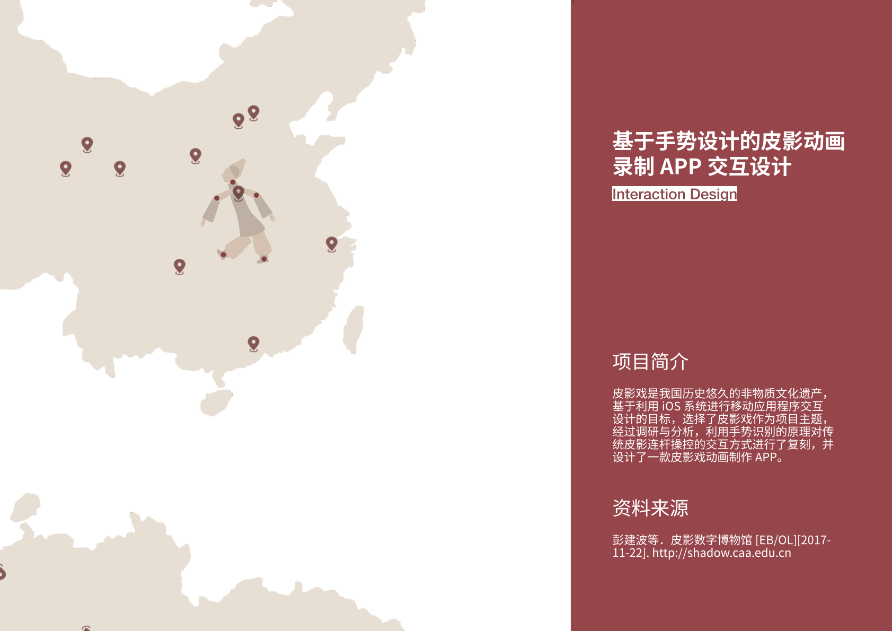
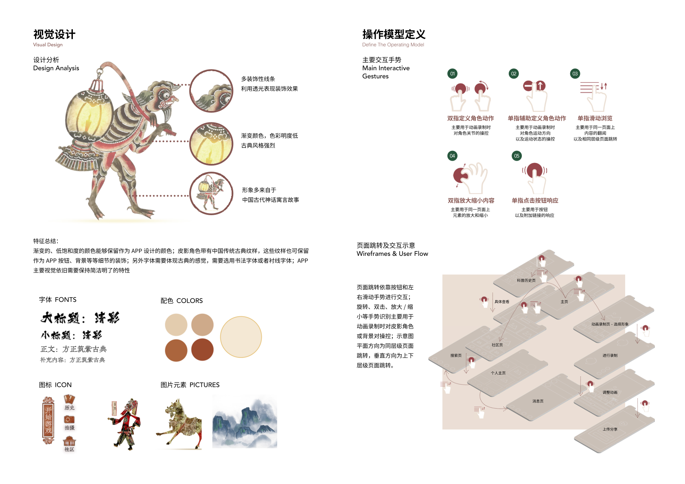
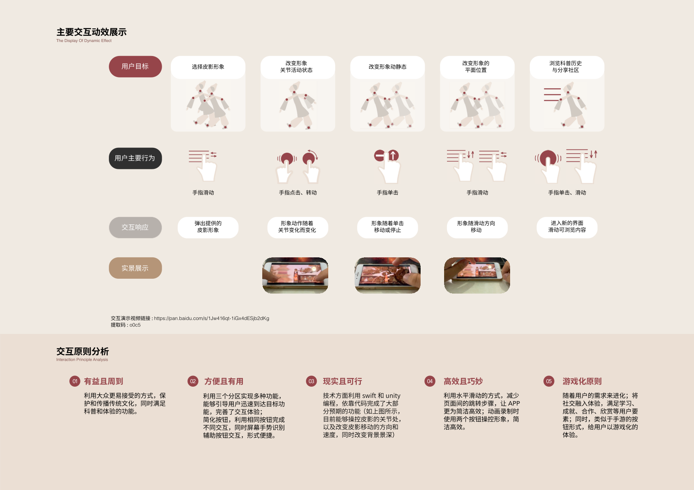
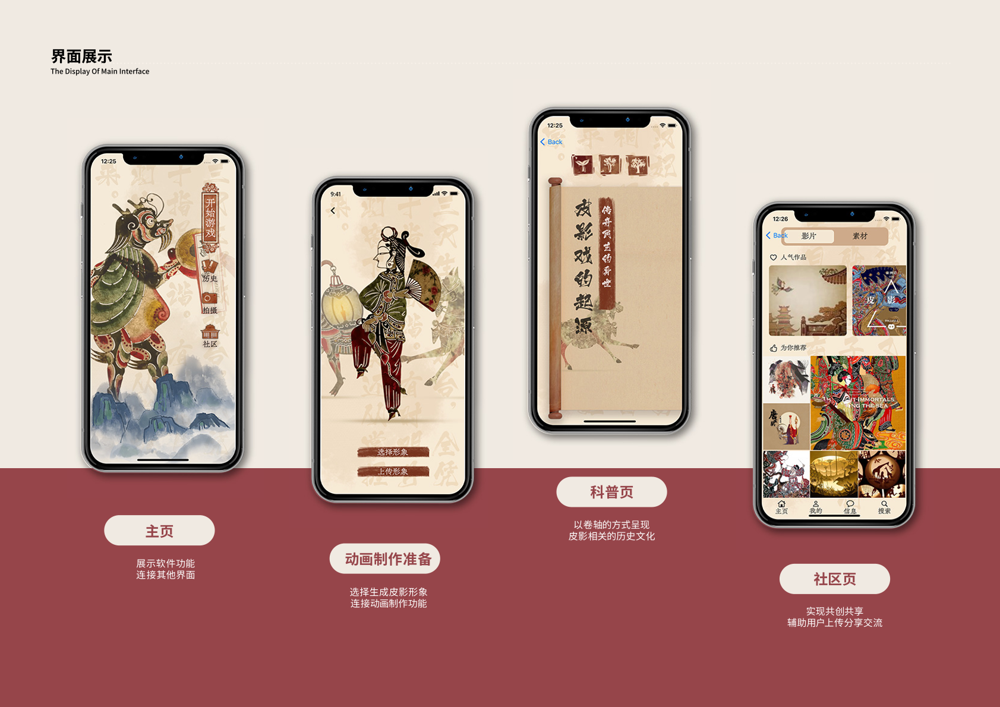
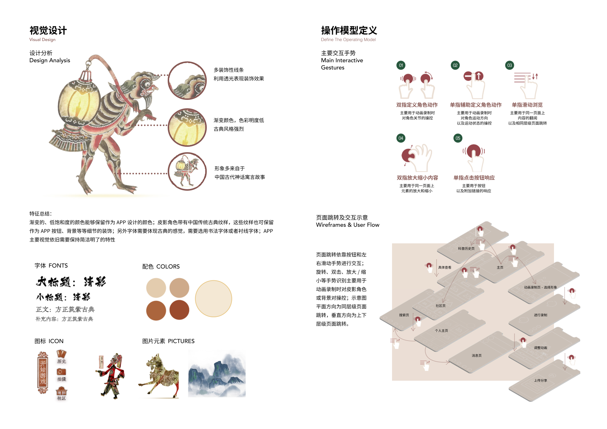
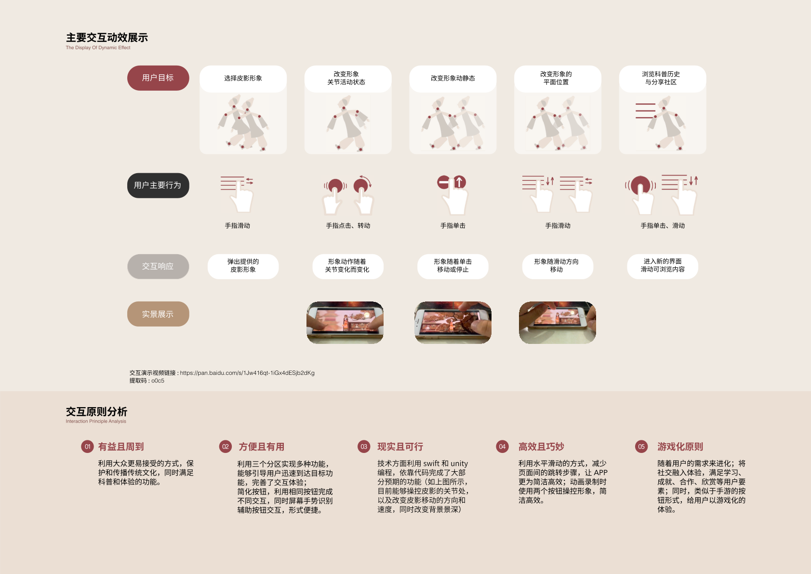
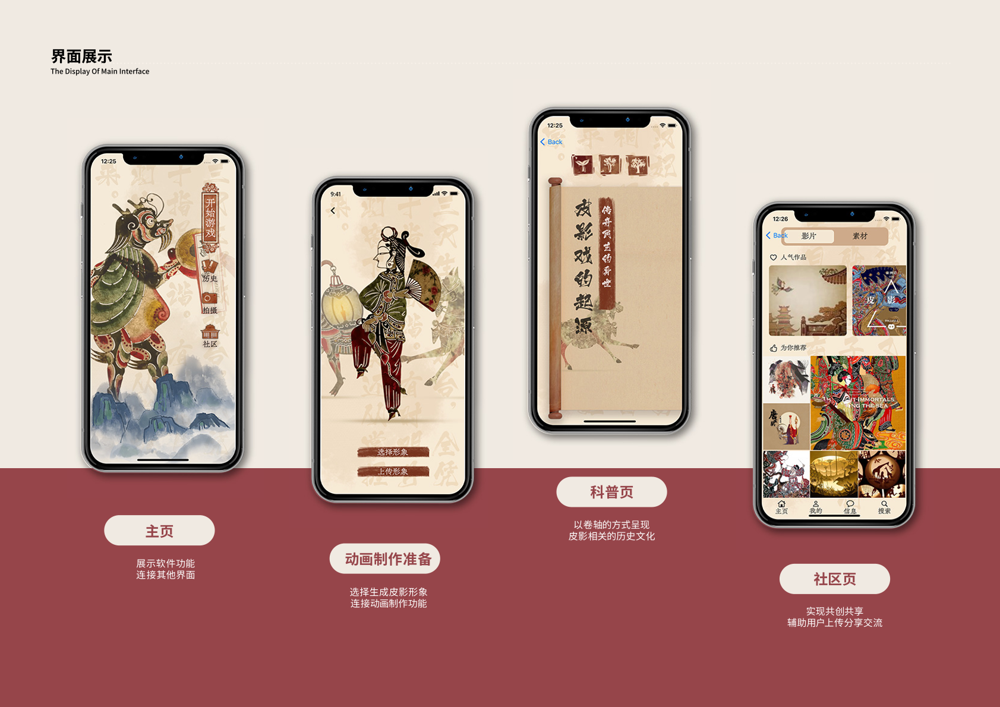

ShadowPlay
Introduction
For my undergraduate course “Interactive Design and Technology”, I developed ShadowPlay with my two group members, a mobile application built using Apple’s Swift. The app is designed to promote traditional shadow puppetry culture by enabling users to interact with digital shadow puppets and create animated short videos. Key features include:
- Interactive Shadow Manipulation: Users can operate digital shadow puppets through intuitive touch gestures, allowing them to simulate traditional puppetry techniques.
- Video Recording & Sharing: The app integrates animation recording functionality, enabling users to capture their puppet performances and share them with a community of culture enthusiasts.
Group Members
Yilin Shao, Hanfei Zhu, Yunqi Li
Demonstrationn

 





Notes
Through this project, I gained a deep understanding of how integrating traditional shadow puppetry culture with modern interactive technologies can empower cultural revitalization. The process of developing this interactive app not only enhanced my technical and design skills but also demonstrated the transformative potential of digital innovation in preserving and promoting cultural heritage. Additionally, this concept design project was honored with the Second Prize in the East China region of the China Mobile App Innovation Competition.